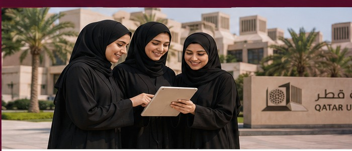
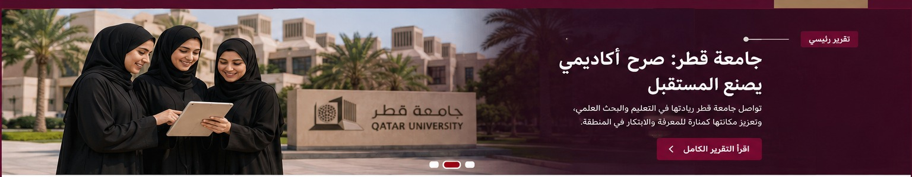

تعليم
تعليم
جامعة قطر ضمن أفضل 120 جامعة عالميًا في تصنيف QS 2026
تواصل الجامعة تعزيز مكانتها الأكاديمية والبحثية إقليميًا ودوليًا.
تغطية طلابية تجمع النص والصورة والفيديو والرسوم المعلوماتية لعرض قصص الحرم الجامعي بأسلوب صحفي حديث.
تعليم
تواصل الجامعة تعزيز مكانتها الأكاديمية والبحثية إقليميًا ودوليًا.
 قبول
قبول
يشمل التقديم الطلاب الجدد والمحولين والزائرين وطلبة الدرجة الثانية.
 محليات
محليات
متابعة لأبرز تطورات التعليم والمجتمع في دولة قطر.
انتقال سريع إلى أهم مسارات التغطية الصحفية داخل الموقع.
تصنيف واضح للفعاليات يساعد الزائر على الوصول السريع للمحتوى المناسب.
بطولات ومنافسات بدنية لتعزيز الصحة والروح الرياضية.
ورش عمل ومسابقات لتعزيز المخزون الثقافي والمعرفي.
أنشطة ترفيهية لتجديد النشاط الطلابي وبناء العلاقات.
ندوات ومبادرات لنشر الوعي المجتمعي والبيئي والصحي.
مقالات طلابية وتجارب من داخل الحياة الجامعية.
تغطيات حصرية وتجارب ملهمة للأنشطة والفعاليات والنوادي الطلابية في الحرم الجامعي.
شاهد الفعالياتمقالات ونصائح دراسية ومهارية تساعدك في رحلتك الأكاديمية وتطوير مهاراتك الذاتية.
تصفح المقالاتبطاقات تحريرية مرتبة للمواد الأحدث في الموقع.

تغطية شاملة لأهم الفعاليات والقرارات الأكاديمية والمستجدات في الحرم الجامعي.
اقرأ المزيد
انضم إلينا في الندوات والورش التدريبية والأنشطة الطلابية المتميزة لهذا الشهر.
اكتشف الفعاليات
تعرّف على أحدث الابتكارات والمشاريع والفرص الجديدة المتاحة للطلاب والباحثين.
اطلع على الجديديتناول هذا التقرير دور الطالبات في صناعة المحتوى الصحفي الجامعي، وكيف تساعد المنصات الرقمية في نشر القصص المؤثرة داخل المجتمع الأكاديمي.
مساحة مخصصة لإضافة ملف الفيديو الخاص بالمجموعة أو رابط YouTube.


عدسة الجامعة موقع صحفي طلابي أُنشئ ضمن مشروع مقرر Multimedia Reporting لعرض مواد التغطية الصحفية الجماعية: تقارير مكتوبة، تقارير مصورة، ألبومات صحفية، ورسوم معلوماتية.